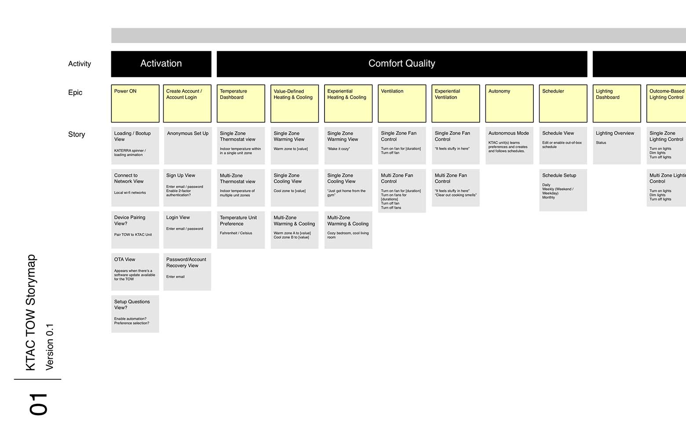
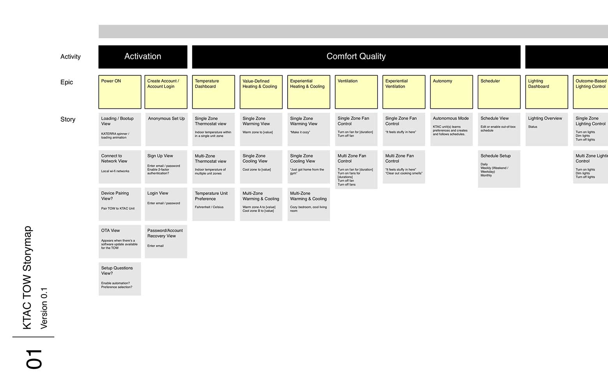
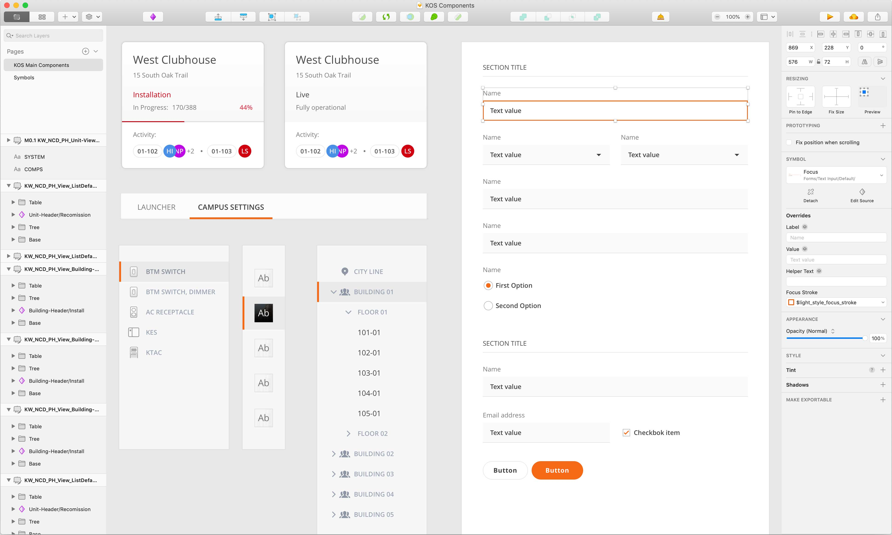
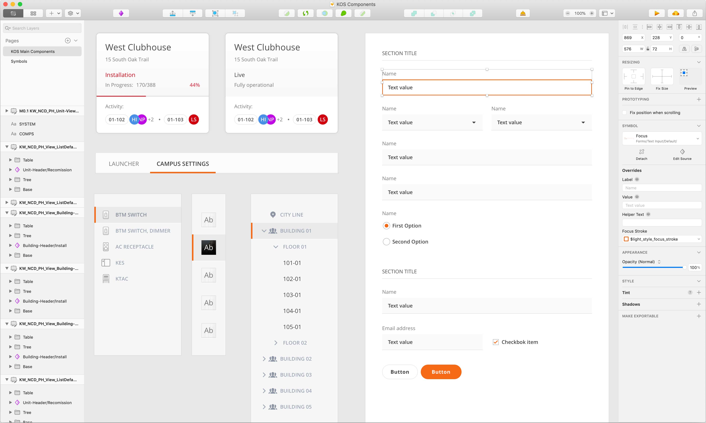

Salvador Soto
I'm a multi-disciplinary designer. Passionate about Rapid Prototyping and Motion Design. I have fun designing and coding my ideas. More about me?


Embedded User Interfaces
A unique form-factor visual interface for an interconnected HVAC system in KATERRA's Building
Systems.
The project required early concept, design, and prototyping in tandem with the engineering and
industrial design teams.
Within the project I contributed with visual / motion design, animation,
and prototyping throughout the entire project. I also helped development by creating and testing a set of
readily-availably code components and animations on the target platform in order to rapidly assemble a
polished visual interface.

The Concept
As Katerra owned most of the building components in the construction assembly, there was a great opportunity to innovate across many areas such as HVAC and home controls.
The intention to create an interconnected custom HVAC and network that would communicate with each other not just through rooms, but units and buildings in order to automate efficiency and performance to a never before seen level.

A custom HMI (Human Machine Interface) was required to simplify control of the unique network of devices across a building unit. It was desired that the design of the control and its interface was discreet, invisible, and accommodate into the traditional controls that a unit user would already know.
The device used machine learning and AI in its background in order to make the HVAC network much more performant and energy efficient.
Information
As more information was gathered regarding desired functionality and its users, the team started developing Information Architecture, Story Maps, and User Flows for the required screens and interactions for the HVAC user experience.
 

UX Prototyping
Just as the project started and behind no one else, very early rapid prototyping started, this helped get a real feel for the size of the interface, the interactions and patterns that we wanted to explore and as a very early test bed for user testing.
Rough and rapid prototypes helped define and compare ideas for the UI navigation and controls, and to user test these options in very similar environments.
High Fidelity Prototyping
Once the UI design was more mature I started developing Higher fidelity prototypes that would simulate an end-product like experience, these helped share the vision of the product, polish the user experience before without having to wait for development, and provide a guideline for developers as they worked towards building the product.

Motion Explorations
I did many motion explorations for the key visuals of the interface, I used multiple approaches, from traditional animation tools like Animate and After Effects, to more dynamic methods like programming them in Javascript or directly in the QT developer environment.
As soon as early hardware prototypes were accesible, I started prototyping animations in the real hardware and development platform in order to help the design play accordingly to hardware limitations. This really helped in creating polished and performant animations that were key to the User Experience.
Testing the dynamic animation that responded to the physical hardware buttons (please note my extremely professional Kleenex stand).
I developed a small program that was running in the device in order to help the visual designer tweak colours in real time without having to wait for the design-developer time wasting loop. This saved tons of time and allowed him to tweak and calibrate the colours for the custom screen.
UI Design System
In parallel to my prototyping and animation work I helped in the design and componetization of the UI System that was required to assemble the interface.

I also took my part in development by coding the UI Components in the hardware platform, this lifted the visual design burden off the developer who focused in assembling the interface and program the logic instead.


The product successfully began production for internal use at many Katerra construction sites. It was however put on hold due to the global pandemic effect on the construction industry.
UI Design Systems & Tools
These tools help a wide range of scenarios, from the complex provisioning and installation of
interconnected
devices in all building units, to the management, maintenance, and troubleshooting of these systems while
in operation.
My work involved the creation of an entire UI Design System for the web
platform. I managed, designed, and developed a library of front-end components that were used by both
designers and developers to mock-up, prototype, and develop the final product.
The outcome
allowed for a single universal design source, avoiding design > development hand-off issues and creating a
much more efficient process.


 


Smart Display UIs
Within the Hisense Innovation group, my work compromised multiple conceptual proposals involving a wide
range of skills, from Visual, Motion, and Animation Design, to High fidelity prototyping, Front-end
Development, and even Hardware prototyping.
While in charge of Rapid Prototyping I used as many
platforms and tools as possible in order to achieve a final product like experience during the very early
stages of the project. This allowed for essential user testing, pre-development design changes, and as a
unified vision to the entire group and stakeholders.
Many products ended up being successfully
released into the international market under the Sharp & Hisense umbrella.


The layerd settings navigation model interaction and animations working on target platform.

The layerd settings navigation model interaction and animations working on target platform.
Voice User Interfaces
A Voice user interface project created as part of a series of Hisense branded displays to make use of
Hisense newest voice recognition technology.
Some of my contributions to the project were the
design and development of a microphone audio visualizer — the
animation of a series of avatar
emotions and its library implementation — And a high-fidelity prototype,
which used a real microphone interface to voice-control the prototype by
using the Web Audio API together with a list of pre-defined of preset commands and responses.
The layerd settings navigation model interaction and animations working on target platform.
Animation
Within the product design process I've worked on several animations such as branding logo animations,
screensavers, loading screens, and dynamic / interactive animations for displays.
I've created
these animations both with traditional and dynamic animation tools and libraries such as After Effects,
Cinema 4D, Animate, and THREE JS (3D Javascript library).
The layerd settings navigation model interaction and animations working on target platform.


Games
Two mobile video games that I've worked on as passion projects. An Untitled personal project, and Zip, a
game in which I collaborated as part of a 3 person independent team.
These projects gave me the
inspiration to learn and the opportunity to work on a multitude of disciplines such as; visual design,
game design, animation, programming, and audio design.
The layerd settings navigation model interaction and animations working on target platform.